Hello! I am an italian girl passionate about programming and digital art.
I hold a Bachelor Degree in Physics from the University of Bologna and a Master Degree in Mathematical Engineering from the Polytechnic University of Turin.
I worked on my master thesis at Los Alamos National Laboratory, carrying out plasma simulations. In this portfolio you can find some of my works.
Résumé
You can contact me via email: elena.fini@outlook.it
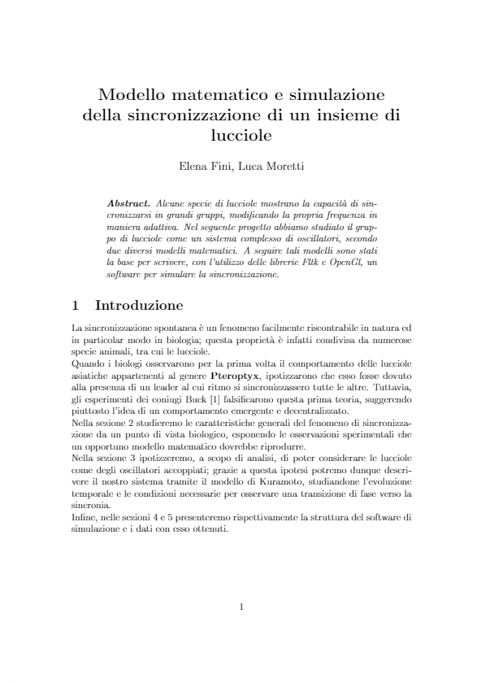
This project was aimed at applying the Kuramoto model to the synchronization of a group of fireflies. The Kuramoto model is a mathematical, differential model that finds many other applications in biology, such as in the modeling of neurons.
The final result was an application equipped with a UI that allowed to observe the emerging synchronicity of the fireflies.
The simulation was advanced in time using a fourth order Runge-Kutta method, whose implementation in C++ is displayed in the below code-snippet.
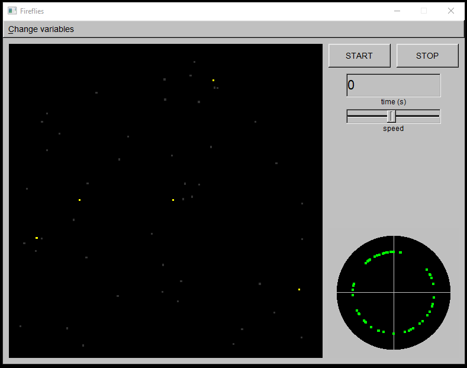
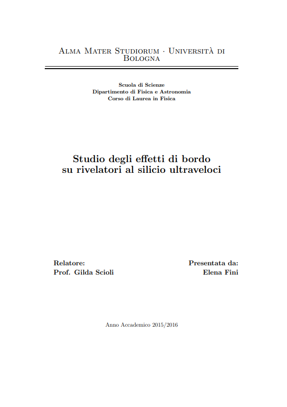
As a part of my bachelor thesis I designed a Virtual Instrument (VI) with the software LabVIEW in order to communicate, through a motion controller Standa 8SMC4- USB-B9-2, with two stepper motors Standa 8MT167-25. The aim was to study the border effects on a new class of silicon detectors by hitting them with a laser beam in different positions. Below you can find a picture of the motion apparatus.
You can also download the full VI.
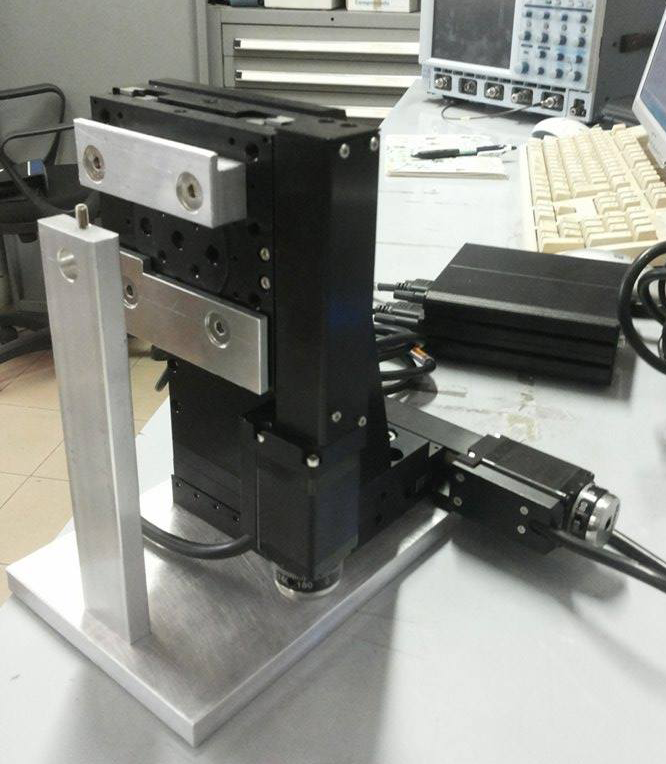
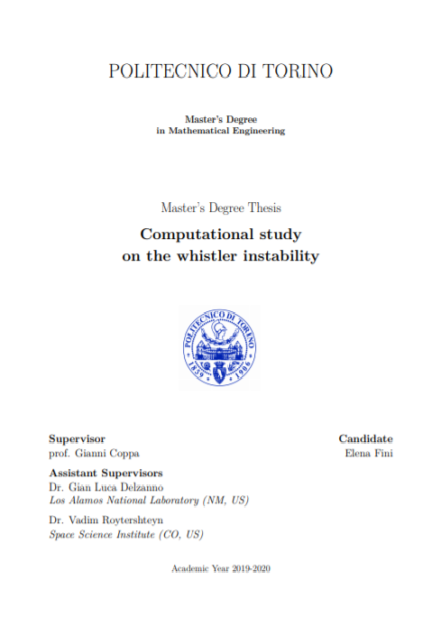
I visited the Los Alamos National Laboratory to work on my Master Thesis. I acquired a broad range knowledge of plasmas, spacing from electrodynamics to applied mathematics. I also learned about modeling techniques, focusing on Particle-In-Cell methods; indeed, I used a PIC code written in C++ to run numerical experiments on one of the HPC Linux cluster owned by the Laboratory..
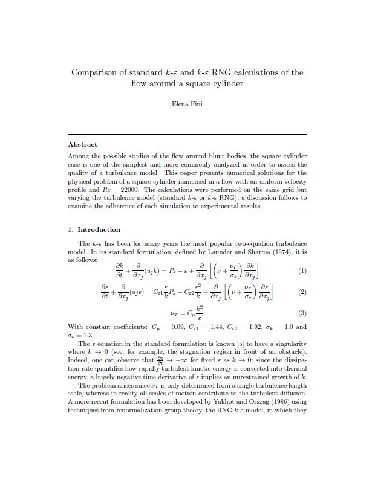
In this work I studied two variations of the same turbulence model (the k-ε model), both used in the simulation of the flow around a square cylinder. This project allowed me to learn the basics of CFD and Ansys Fluent. Below is an example of the results obtained by implementing the k-ε RNG model, which correctly reproduces the release of vortices downstream, a typical property of this physical setup.
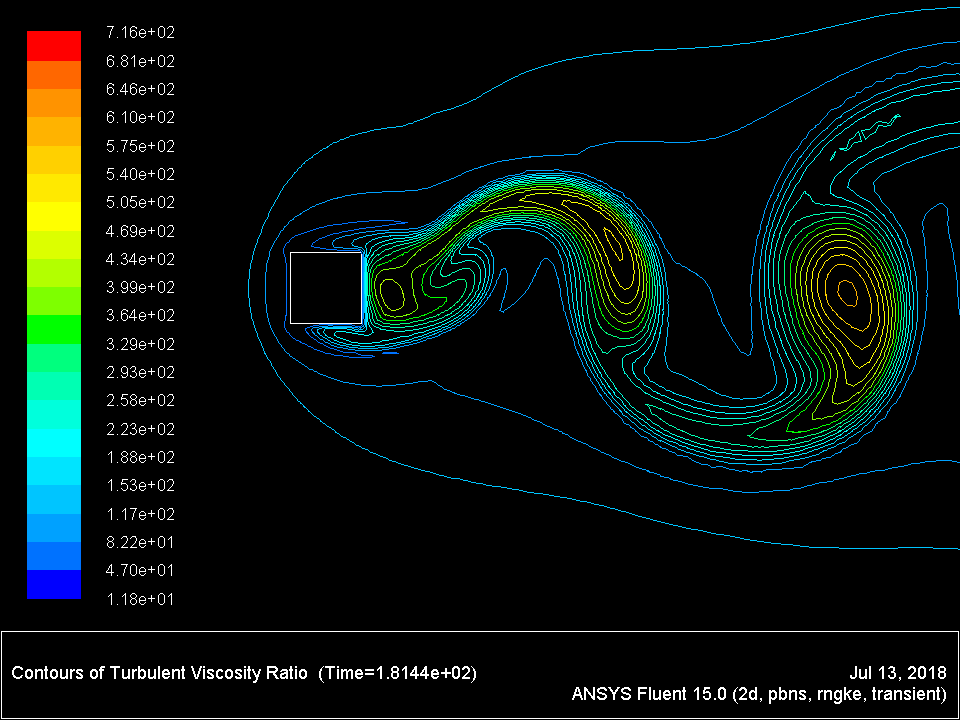
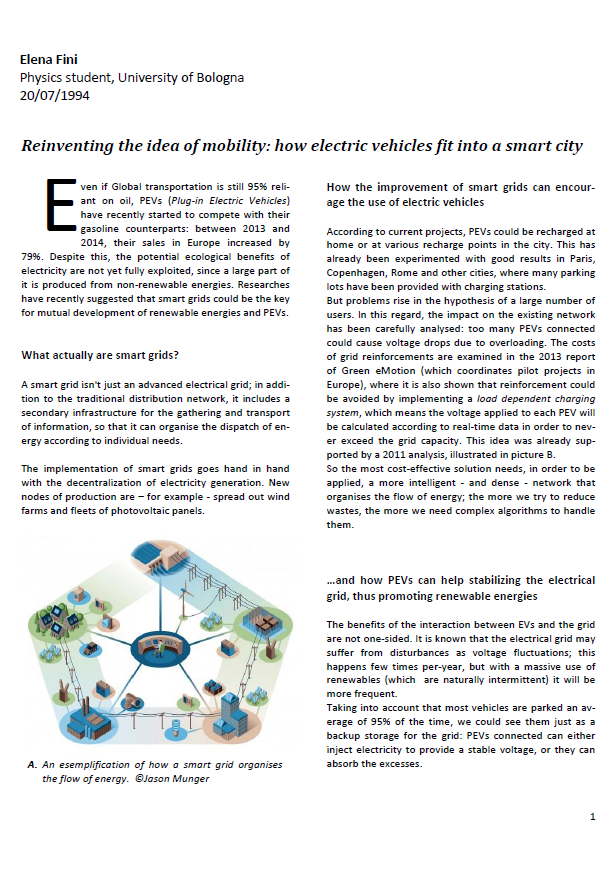
In 2015, while still studying for my Bachelor Degree, I took part in an international contest called Génération Energies, which was promoted by Sia Partners and RTE France.
The contest required its partecipants to submit a paper with a practical proposal regarding the integration of renewable energies and harvesting technology in the landscape of a smart city. The paper was also required to analyze the feasibility, both from economic and social perspectives, of the presented project.
I submitted a proposal regarding the mutual integration of electric vehicles and the smart grid. The proposal was awarded the 10th prize.
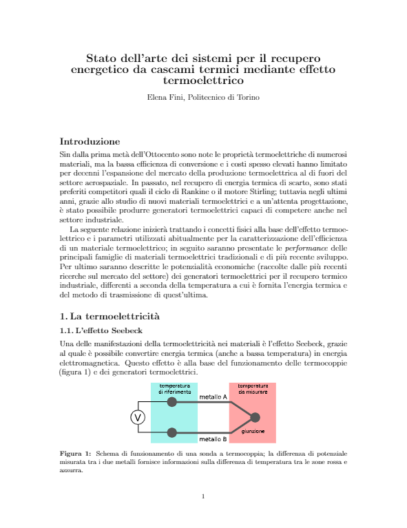
In 2018 I took part in the Enertour4students italian contest, promoted by IDM Südtirol - Alto Adige. The contest was open to italian engineering students and required to submit a report on different subjects, all in the field of energy saving. I presented a report on thermoelectric energy harvesting in industrial settings.
This report, along with other 20, was selected by a committee of entrepreneurs in the field of renewable energies.
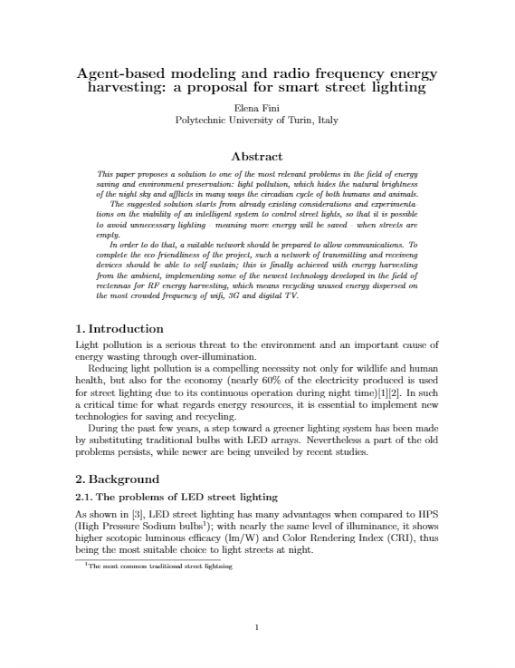
This paper was submitted, in 2018, to an international contest called Green Brain of the Year, organized by the Middle East Technical University. The contest was open to university students who were interested in energy saving and renewables.
The paper presented a practical proposal regarding smart street lightning, with a view to supporting the reduction of energy consumption. The proposal involved the mathematical modeling of street lights as a multi-agent system.
The paper was awarded the third prize.
I'm currently developing a mobile game for Android using Android Studio as IDE. The game is now in a cloased alpha versione and a beta version is planned to be released on the Play Store.
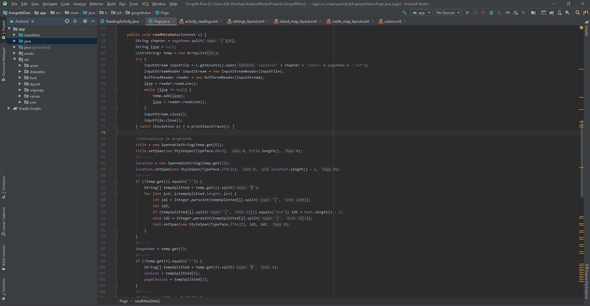